Mapping Religion
Inferring cultural landscapes with the inverse Ising model
Plan
- The ‘big Gods’ debate
- Data, model & methodological improvements
- Fundamental constraints (parameters)
- The “landscape” of possible religions (configurations)
- Dynamics over the landscape
- Closing remarks
Plan
The 'big Gods' debate- Data, model & methodological improvements
- Fundamental constraints (parameters)
- The “landscape” of possible religions (configurations)
- Dynamics over the landscape
- Closing remarks
the “big Gods” debate


Norenzayan (2013)
Norenzayan (2013)
Norenzayan (2013)
Whitehouse (2019)
Whitehouse (2019)
::: {.notes} - Standardization of rituals preceede big Gods.
Turchin (2022)
‘big Gods’ summarized
- Strong correlation between ‘big Gods’ and ‘big societies’ - but causality difficult to establish.
- Challenges in missing data, expert disagreement, and unobserved variables.
- Lack of agreement on causal cultural evolutionary drivers (both “how” and “which”).
Plan
- The ‘big Gods’ debate
Data, model & methodological improvements- Fundamental constraints (parameters)
- The “landscape” of possible religions (configurations)
- Dynamics over the landscape
- Closing remarks
Our starting point
- Might not understand the web of cultural-evolutionary drivers well enough to target causation currently
Our starting point
- We want to infer a generative model of larger systems of constraints that we can probe at different levels
The (inverse) Ising model
- given (1) binary data, and (2) constraints on
meansandpairwise correlationsthe (inverse) Ising model is the maximum entropy model.
The (inverse) Ising model
The (inverse) Ising model
The (inverse) Ising model
\[p_i = \frac{exp \: E_i(\vec{\theta})}{Z(\vec{\theta})}\]
\[E_i(\vec{\theta}) = \sum_{i,j; i>j} J_{ij}\sigma_{i}\sigma_{j} + \sum_{i}h_i\sigma_i\]
- \(E_i(\vec{\theta})\): energy of a given configuration
- \(p_i\): probability of a given configuration
- \(Z(\vec{\theta})\): partition function (normalizes); all \(p_i\) sum to 1.
The (inverse) Ising model
Neural Landscapes

“Weak pairwise correlations imply strongly correlated network states in a neural population”, Schneidman et al. (2006)
Technical challenges
- Previous examples have “complete” data (Ising model only works for “complete” data)
- Previous data is not obviously biased (or subject to interpretation or disagreement)
- Since this is not true for our source of data we need to solve some problems
Technical innovations
- Sohl-Dickstein, J., Battaglino, P., & DeWeese, M. R. (2009). “Minimum probability flow learning”.
1. Regularization
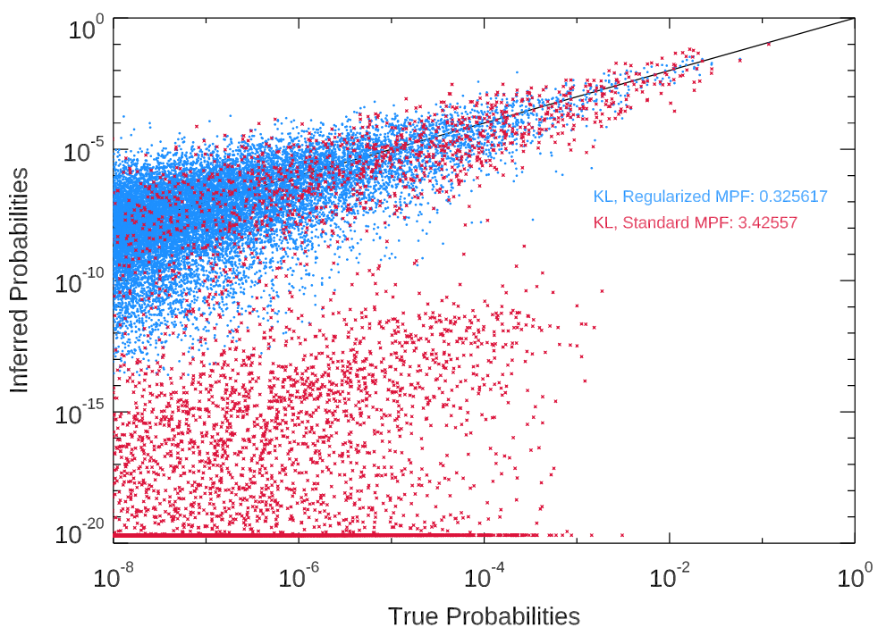
2. Inconsistent data
- approx. 17% of our curated DRH data set
\[r_1 = \{1, 1, 0\}\] \[r_2 = \{1, 0, 1\}\]
2. Inconsistent data
\[r_1 = \{1, 1, 0\}: w = 0.25\] \[r_2 = \{1, 0, 1\}: w = 0.25\] \[r_3 = \{1, 1, 1\}: w = 0.25\] \[r_4 = \{1, 0, 0\}: w = 0.25\]
3. Partial-MPF (missing data)
\[ j = \{1, 0, X, X\}\]
- Dynamically infer missing data from best estimates of parameters
- Work with distribution over the (in this case) four possible configurations
3. Partial-MPF (missing data)
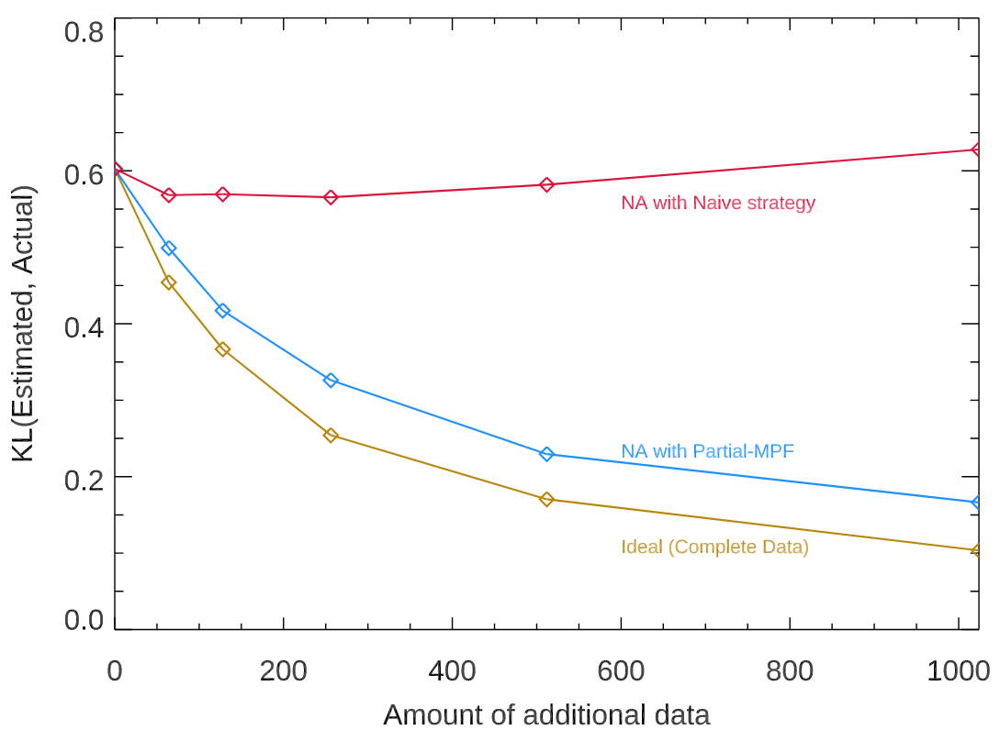
3. Partial-MPF (missing data)
- One example is the Archaic Spartan Cults (800BC-500BC)
- Given the inferred landscape (e.g. what we know about constraints from other observed religions), and what we do know about the Spartans, we can provide a quantitative estimate
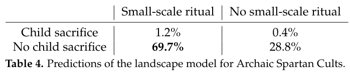
What we have
- A set of pairwise couplings \(J_{ij}\) between features, and local fields \(h_i\) for each feature.
- These correspond to (transformations) of the parameters one could infer from a series of logistic regressions.
- Different from surface-level correlations and means.
Plan
- The ‘big Gods’ debate
- Data, model & methodological improvements
Fundamental constraints (parameters)- The “landscape” of possible religions (configurations)
- Dynamics over the landscape
- Closing remarks
\(J_{ij}\) and \(h_i\) vs. surface-level features
\(J_{ij}\) and \(h_i\) vs. surface-level features
\(J_{ij}\) and \(h_i\) vs. surface-level features
\(J_{ij}\) and \(h_i\) vs. surface-level features

Constraint network
Dynamics over \(J_{ij}\)?
Dynamics over \(J_{ij}\)?
Dynamics over \(J_{ij}\)?
Dynamics over \(J_{ij}\)?
Plan
- The ‘big Gods’ debate
- Data, model & methodological improvements
- Fundamental constraints (parameters)
The "landscape" of possible religions (configurations)- Dynamics over the landscape
- Closing remarks
The “landscape” of religion
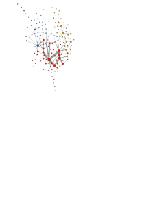
The “landscape” of religion
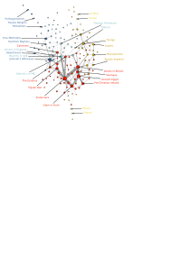
The “landscape” of religion
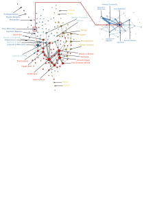
The “landscape” of religion
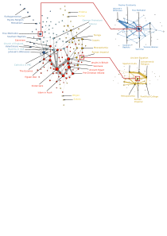
Plan
- The ‘big Gods’ debate
- Data, model & methodological improvements
- Fundamental constraints (parameters)
- The “landscape” of possible religions (configurations)
Dynamics over the landscape- Closing remarks
Cultural Stability
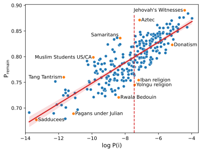
Cultural Attractors
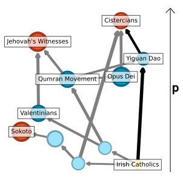
Fluidity of cultural belief systems
Plan
- The ‘big Gods’ debate
- Data, model & methodological improvements
- Fundamental constraints (parameters)
- The “landscape” of possible religions (configurations)
- Dynamics over the landscape
Closing remarks
‘big Gods’ (sort of) revisited
Model of human agency
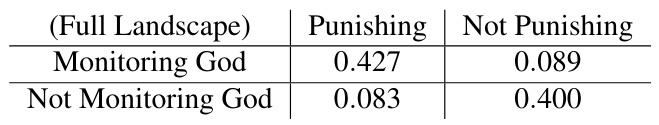
Secular institutions
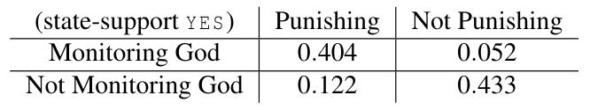
Fundamental & context-dependent constraints
Next steps
- How does landscape topology change with more questions?

Next steps
- Discovery of underlying structure?
Next steps
- Integrating temporal information to understand dynamics
- e.g., protestantism in Germany at time \(t_1, t_2, \ldots, t_n\)
Take-home Messages
- Parameters (coefficients) generally meaningful/reasonable & might guide/constrain hypothesizing
- Landscape topology shows meaningful structure which can be read partially temporally (e.g. early/late)
- Critical to consider timescales (e.g. local/global stability) and contextual favoring of traits
- Some features might be more/less defining of a particular religion than others
Thank you for your time
- Joint work with Simon DeDeo (CMU, Santa Fe)
- Thanks to the DRH (Edward Slingerland and the gang)
- Thanks to Lee and Daniels (2019)
- “Inferring Cultural Landscapes with the Inverse Ising Model”, Poulsen & Dedeo (2023)
- “Cognitive Attractors and the Cultural Evolution of Religion”, Poulsen & DeDeo (in review)
Appendix
Questions

Social Landscapes
“Statistical Mechanics of the US Supreme Court”, Lee et al. (2015)